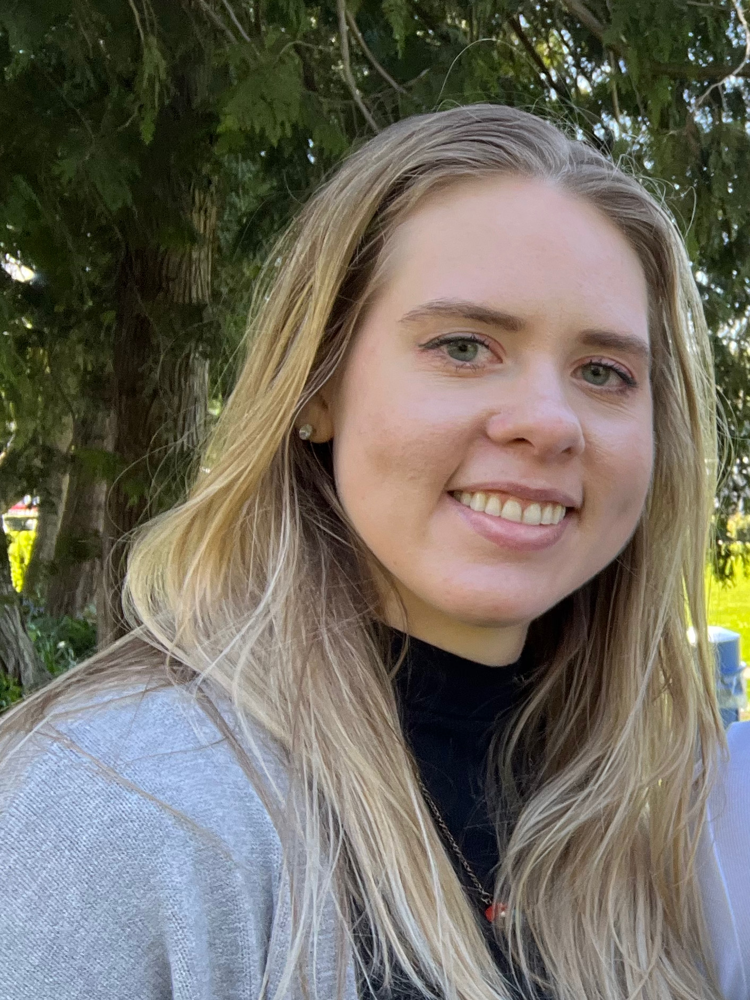

Artist statement
A practice built on process, place, and play.

I work across sculpture and installation, guided by process and a strong conceptual focus. I explore different materials to understand how they behave and what possibilities they hold.
Much of my work pays homage to meaningful places in my life, especially my high school rowing club and the experience of being on the water. Other pieces draw from the outdoors or act as personal extensions of what brings joy to me and my viewers.
Key components of my art practice are collaboration, play, and shared delight between the artist and viewer. I’m drawn to revisiting past moments and transforming them into works that honor memory while creating new experiences for others.
Bio
Bonnie Davidson was born in Portland, Oregon, and has lived in the Seattle area since 2016. She is completing her AFA degree from Shoreline College with a concentration in sculpture and fiber arts. She has interned in the campus gallery, connecting with featured artists and gaining hands‑on curatorial experience. Her work has been exhibited in the Shoreline College Gallery and featured in several school publications. She focuses on paying homage to meaningful places in her life, getting inspired from the outdoors, and creating joyful moments for herself and the viewers.
Artist CV
Education, exhibitions, and curatorial practice
Education
2023 - Present: Associate of Fine Arts - Foundational Studio Arts, Shoreline College, Shoreline WA
Exhibitions & performances
2025
- Shoreline Student Juried Art Exhibition. Shoreline Art Gallery. Shoreline, WA
- SCC 60th Anniversary Reception Art Parade. Shoreline Art Gallery. Shoreline, WA
2026
- Shoreline Student Juried Art Exhibition. Shoreline Art Gallery. Shoreline, WA
- Associate of Fine Art Portfolio Exhibition. Shoreline Art Gallery. Shoreline, WA (Forthcoming)
- Art Exhibition: Bold Colors, Blue Koi Gallery (online)
Curatorial projects & programming
2025
- Shoreline Student Juried Art Exhibition. Gallery Assistant. Shoreline Art Gallery. Shoreline, WA.
- Professional Artist Series: Sad Happens: A Celebration of Tears. Gallery Assistant. Shoreline Art Gallery. Shoreline, WA.
- Associate of Fine Art Portfolio Exhibition. Gallery Assistant. Shoreline Art Gallery. Shoreline, WA.
- Through the Lens. Gallery Assistant. Shoreline Art Gallery. Shoreline, WA.
2026
- Shoreline Showcase: Holdfast by Q Quast, Gallery Assistant. Shoreline Art Gallery. Shoreline, WA.
- Earth Alchemy: Annie Reierson, Gallery Assistant. Shoreline Art Gallery. Shoreline, WA.
- Shoreline Student Juried Art Exhibition. Gallery Assistant. Shoreline Art Gallery. Shoreline, WA.
- Artist Series: Brian Patrick Franklin & Chris Wille: IN/OUT. Gallery Assistant. Shoreline Art Gallery. Shoreline, WA.
Publications
2025
- Lazar, Rose and Stosuy, Brandon, editors. (2025) Submitted Tears: A Collection of Stories within the SCC Community.
- Paslay, Grey, editor. (2025) Spindrift Art & Literary Journal.
2026
- Shoreline students. (2026) Enfolio.
Associations
2025-2026
- Gallery Assistant. Shoreline Art Gallery, Shoreline Community College. Shoreline, WA.
- Roles: Co-curation, installation, special training in handling of precious objects, maintenance and care of permanent collection, serve as liaison for Washington State Arts Commission, marketing and promotion, event planning, facilitation of interdisciplinary campus collaborations.